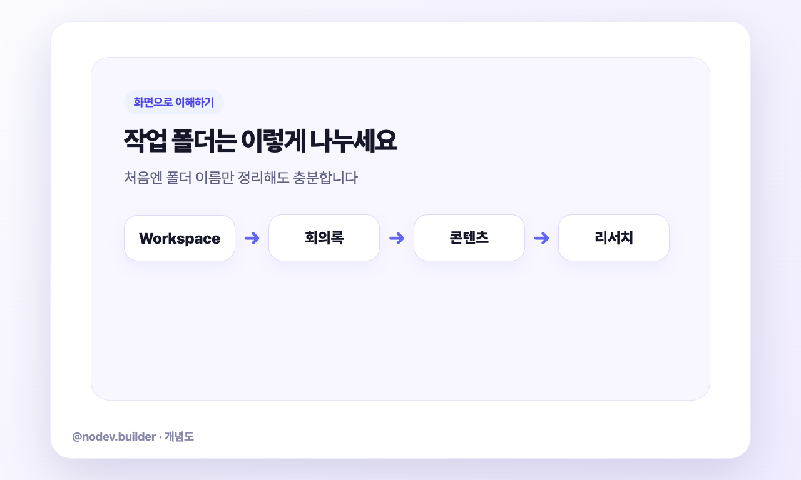
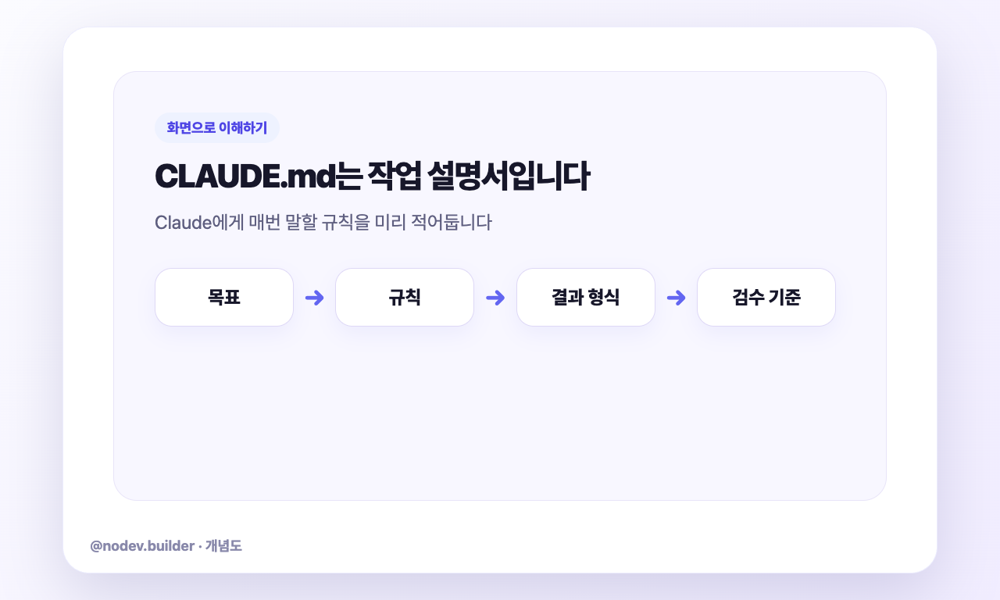
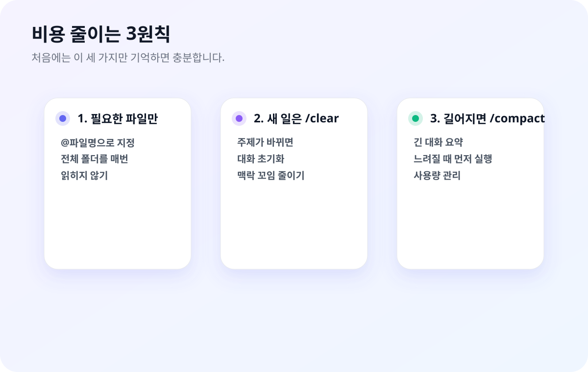

폴더 구조를 한 번 잡아두면, 매번 설명 없이도 Claude가 바로 맥락을 파악합니다.
워크스페이스는 어려운 설정이 아니라, 업무별 방을 나눠두는 방식입니다.


업무 단위로 묶은 폴더입니다. 폴더 안에 CLAUDE.md(규칙), input/(원본 자료), output/(결과물)을 넣어두면 — Claude가 폴더를 열자마자 "이 폴더는 무슨 작업용이고, 어떤 규칙으로 해야 하는지"를 파악합니다.
claude 실행핵심은 하나: 업무 폴더 안에 CLAUDE.md를 넣어두는 것입니다. 구조는 자유롭게 잡으면 됩니다.
폴더 구조를 "반드시 이렇게 해야 한다"는 정답은 없습니다. 다만 실제로 써보면서 잘 작동하는 패턴이 있습니다.
폴더 안에 CLAUDE.md만 있어도 효과가 큽니다. 이 폴더가 어떤 작업용인지, Claude가 어떻게 행동해야 하는지를 적습니다.
원본은 건드리지 않고 결과물만 별도로 모아두고 싶다면 폴더를 나눕니다. 편하면 그냥 한 폴더에 둬도 됩니다.
예를 들어 영업 데이터 분석 작업을 위한 폴더라면 이런 식입니다. 폴더 이름, 파일 구조는 자신에게 맞게 바꾸세요.
Claude Code 터미널을 켜고 원하는 대로 말하면 됩니다.
sales, reports, meetings처럼 단순할수록 좋습니다.
이 폴더에서만 적용할 규칙을 씁니다. 글로벌 CLAUDE.md(4편)와 다른 점은 — 여기서는 이 작업에 특화된 내용만 씁니다.
~/.claude/CLAUDE.mdCLAUDE.md이 폴더가 어떤 작업용인지, Claude가 이 폴더에서 어떻게 행동해야 하는지를 씁니다. 자신의 작업에 맞게 자유롭게 수정하세요.
알면 작업 속도가 달라지는 기능들입니다. 하나씩 써보세요.
텍스트로 설명하기 어려운 것은 화면을 캡처해서 붙여넣으면 됩니다. Claude가 이미지를 읽고 분석합니다.
Mac: Cmd+Shift+4 → 영역 선택 후 Cmd+V
Windows: Win+Shift+S → 영역 선택 후 Ctrl+V
엑셀 표 캡처 후 "이 표에서 증감률 계산해줘", 오류 화면 캡처 후 "이게 왜 안 되는 건지 설명해줘"
긴 요청을 타이핑하기 귀찮을 때 운영체제의 받아쓰기 기능을 활용하세요.
시스템 설정 → 키보드 → 받아쓰기 활성화
단축키(보통 Fn Fn)를 누르고 말하면 텍스트로 입력됩니다.
Win + H를 누르면 음성 입력이 시작됩니다. Claude Code 입력창에서 바로 씁니다.
Claude Code는 작업 중 자동으로 스냅샷을 저장합니다. 잘못된 방향으로 작업이 진행됐을 때 이전 상태로 돌아갈 수 있습니다.
Shift+Tab 2회로 Plan Mode에 진입해서 계획을 먼저 확인하세요. 체크포인트로도 복구가 어려운 상황을 예방합니다.
대화가 길어지면 Claude Code가 자동으로 이전 내용을 요약해서 압축합니다. 이 과정은 자동이라 별도 설정이 필요하지 않습니다. 직접 더 빠르게 압축하고 싶으면 /compact를 씁니다.
Claude는 메시지 수가 아니라 토큰 수로 과금됩니다. 핵심 원리 하나만 이해하면 비용을 크게 줄일 수 있습니다.
/clear로 새로 시작/compact로 압축@로 지정해서 열기
처음부터 모든 팁을 외울 필요 없습니다. 아래 세 가지만 습관으로 만들면 충분합니다.

"코드 개선해줘" ❌ → "@auth.py 의 login 함수만 봐줘" ✅
범위가 좁을수록 Claude가 읽는 토큰이 줄어듭니다.
전혀 다른 주제로 넘어갈 때는 반드시 /clear. 이전 대화가 남아있으면 불필요한 맥락이 매번 비용을 냅니다. (자세한 사용법은 4편 참고)
같은 세션에서 계속 작업해야 한다면 주기적으로 /compact. 대화를 요약·압축해서 토큰을 줄입니다. (자세한 사용법은 4편 참고)
질문 3개를 따로 보내지 말고 한 번에 묶어서. 컨텍스트 로딩 비용이 3번 → 1번으로 줄어듭니다.
새 메시지를 보내는 대신 이전 메시지 수정 버튼으로 내용을 바꾸면 대화가 더 짧게 유지됩니다.
Claude가 엉뚱한 방향으로 가면 즉시 Esc. 잘못된 방향의 전체 응답이 완료될 때까지 기다리면 그만큼 비용이 더 나옵니다.
Shift+Tab 2회로 계획 먼저 확인. 잘못된 방향을 실행하고 되돌리는 것보다 계획 단계에서 수정하는 게 훨씬 쌉니다.
같은 대화를 100개 메시지까지 이어가면 초반보다 몇 배 비싸집니다. 작업 단위로 끊어서 새 세션으로 이어가는 게 경제적입니다.
CLAUDE.md는 매 메시지마다 읽힙니다. 길수록 비용이 올라갑니다. 실제로 매번 필요한 규칙만 남겨두세요.
| 명령어 | 누가 쓰나요 | 알 수 있는 것 |
|---|---|---|
/cost |
API 직접 사용자 | 이번 세션의 토큰 수와 예상 비용 |
/stats |
Pro·Max 구독자 | 사용 패턴, 누적 통계 |
| Console 대시보드 | API 사용자 | 월별 누적 비용, 지출 한도 설정 |
/stats로 주기적으로 확인하고, /compact로 효율을 높이는 습관은 여전히 유용합니다.
워크스페이스와 비용 관련 자주 겪는 상황들입니다.
아래 체크리스트를 확인해보세요.
지원하는 이미지 형식: PNG, JPEG, GIF, WEBP
스크린샷은 클립보드 붙여넣기(Cmd+V / Ctrl+V)로 넣는 게 가장 안정적입니다. PDF나 PPT는 이미지가 아니라 별도 방법이 필요합니다.
업무 성격별로 상위 폴더를 두고 그 안에 워크스페이스를 넣는 방식이 좋습니다.